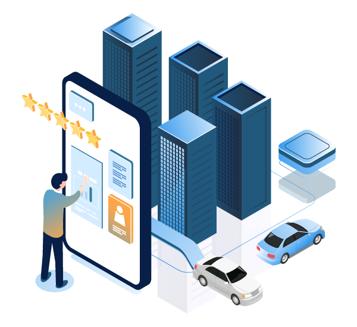

El desarrollo de las ciudades digitales ha emergido como respuesta a los complejos desafíos que enfrentan las urbes modernas: crecimiento poblacional acelerado, demanda de servicios públicos eficientes, problemas ambientales y la necesidad de mejorar la calidad de vida de los ciudadanos. Este fenómeno urbano-tecnológico representa una convergencia sin precedentes entre innovación digital y planeación urbana. La presente investigación explica el proceso de desarrollo de las ciudades digitales, examinando sus etapas evolutivas, modelos de implementación, actores clave, desafíos técnicos y sociales, así como su impacto en la reconfiguración del espacio urbano contemporáneo.

El desarrollo de ciudades digitales representa un proceso complejo y multidimensional que requiere una cuidadosa articulación entre tecnología, política urbana y necesidades sociales. A medida que evoluciona de proyectos aislados a ecosistemas urbanos completamente integrados, enfrenta el doble desafío de mantener el ritmo de innovación tecnológica mientras asegura inclusión social y sostenibilidad a largo plazo. Los casos exitosos demuestran que el modelo colaborativo, centrado en el ciudadano y basado en datos, ofrece el mayor potencial para crear urbes verdaderamente inteligentes. El futuro del desarrollo urbano estará marcado por la capacidad de equilibrar eficiencia tecnológica con resiliencia social, creando espacios urbanos que sean no solo más inteligentes, sino también más humanos.